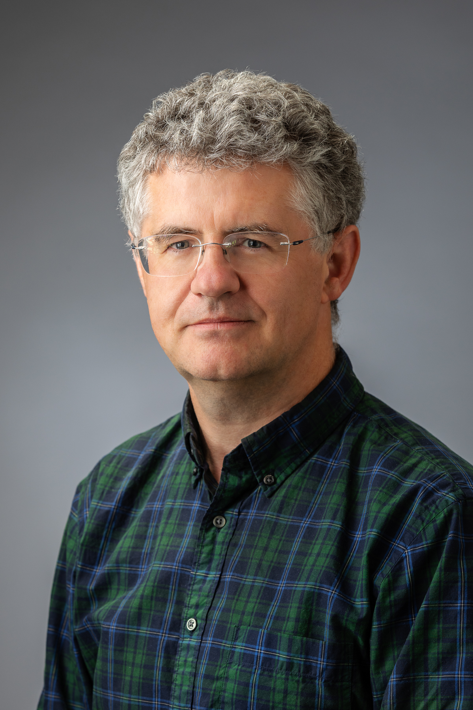
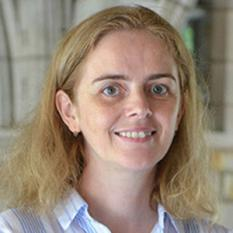

SCAM 2020 will be held in Adelaide, Australia co-located with ICSME 2020.
The aim of the International Working Conference on Source Code Analysis & Manipulation (SCAM) is to bring together researchers and practitioners working on theory, techniques and applications which concern analysis and/or manipulation of the source code of computer systems. While much attention in the wider software engineering community is properly directed towards other aspects of systems development and evolution, such as specification, design and requirements engineering, it is the source code that contains the only precise description of the behaviour of the system. The analysis and manipulation of source code thus remains a pressing concern.
For the purpose of clarity ‘source code’ is taken to mean any fully executable description of a software system. It is therefore so-construed as to include machine code, very high level languages and executable graphical representations of systems. The term ‘analysis’ is taken to mean any automated or semi automated procedure which takes source code and yields insight into its meaning. The term ‘manipulation’ is taken to mean any automated or semi-automated procedure which takes and returns source code.
Our hearts go out to all those who may be battling COVID-19.
SCAM 2020 is still scheduled to be held as planned in the week starting September 27th, 2020, but the conference will be run fully virtual. As we learn from other conferences how to run virtual conferences successfully, we will post updates on the virtual setup on the conference website and on social media.
Virtual SCAM comes at significantly reduced registration rates. We will charge authors a fee of AUD 150 and non-author registration AUD 30. Registration fees are subject to change and will be officially confirmed shortly.
| Sunday, September 27, 2020 | |||
| Europe/Africa UTC | |||
| 8:00-08:20 | Opening: Foutse Khomh, Nikolaos Tsantalis, and Cristina Cifuentes | ||
| 8:20-9:00 | Social Event Tool Talks (Session Chair: Foutse Khomh) | ||
| Stéphane Ducasse - Powerful tools for live development with Pharo | |||
| 9:00-10:00 | Modular & Incremental Analysis (Session Chair: Alexander Jordan) | ||
| Research | A Parallel Worklist Algorithm for Modular Analyses
Noah Van Es, Quentin Stiévenart, Jens Van der Plas and Coen De Roover |
||
| Research | Compositional Information Flow Analysis for WebAssembly Programs
Quentin Stievenart and Coen De Roover |
||
| Research | Incremental Flow Analysis through Computational Dependency Reification
Jens Van der Plas, Quentin Stiévenart, Noah Van Es and Coen De Roover |
||
| Engineering | MAF: A Framework for Modular Static Analysis of Higher-Order Languages
Noah Van Es, Jens Van der Plas, Quentin Stiévenart and Coen De Roover |
||
| 10:00-10:30 | Break | ||
| 10:30-11:30 | Technical debt & Refactoring (Session Chair: Alexander Serebrenik) | ||
| Research | Does code review really remove coding convention violations?
Donggyun Han, Chaiyong Ragkhitwetsagul, Jens Krinke, Matheus Paixao and Giovanni Rosa |
||
| Research | Automated Identification of On-hold Self-admitted Technical Debt
Rungroj Maipradit, Bin Lin, Csaba Nagy, Gabriele Bavota, Michele Lanza, Hideaki Hata and Kenichi Matsumoto |
||
| NIER | Towards Detecting Inconsistent Comments in Java Source Code Automatically
Nataliia Stulova, Arianna Blasi, Alessandra Gorla and Oscar Nierstrasz |
||
| NIER | Can Refactorings Indicate Design Tradeoffs?
Thomas Schweizer, Vassilis Zafeiris, Marios Fokaefs and Michalis Famelis |
||
| Americas UTC | |||
| 16:00-17:00 | Keynote: Ruzica Piskac (Yale), “Analyzing a Large Corpus of Configuration Files to Synthesize their Specifications” (Session Chair: Nikolaos Tsantalis) | ||
| 17:00-18:00 | Bugs (Session Chair: Chanchal Roy) | ||
| Research | Looking for Software Defects? First Find the Nonconformists - An Outlier-Based Defect Prediction Approach
Sara Moshtari, Joanna Cecilia da Silva Santos, Mehdi Mirakhorli and Ahmet Okutan |
||
| Research | Understanding and Characterizing Changes in Bugs Priority : The Practitioners' Perceptive
Rafi Almhana, Thiago Ferreira, Marouane Kessentini and Tushar Sharma |
||
| Research | The Failure of One, the Fall of Many: An Exploratory Study of Software Features for Defect Prediction
Geanderson Esteves dos Santos and Eduardo Figueiredo |
||
| NIER | An Approach for the identification of information leakage in Automotive Infotainment systems
Abdul Moiz and Manar Alalfi |
||
| 18:00-18:30 | Code generation & adaptation (Session Chair: Thomas Dean) | ||
| Research | Ad hoc Test Generation Through Binary Rewriting
Anthony Saieva, Gail Kaiser and Shirish Singh |
||
| NIER | Adapting Queries to Database Schema Changes in Hybrid Polystores
Jérôme Fink, Maxime Gobert and Anthony Cleve |
||
| 18:30-19:00 | Android (Session Chair: Mohamed Wiem Mkaouer) | ||
| Research | Annotation practices in Android apps
Ajay Kumar Jha and Sarah Nadi |
||
| Engineering | DroidXP: A Benchmark for Supporting the Research on Mining Android Sandboxes
Francisco Handrick da Costa, Ismael Medeiros, Pedro Costa, Thales Menezes, Marcos Vinícius Pereira Marques, Rodrigo Bonifácio and Edna Dias Canedo |
||
| 19:00-19:40 | Dependencies (Session Chair: Michael Decker) | ||
| Research | DepGraph: Localizing Performance Bottlenecks in Multi-Core Applications Using Resource Dependency Graphs and Software Tracing
Naser Ezzati Jivan, Quentin Fournier, Michel Dagenais and Abdelwahab Hamou-Lhadj |
||
| RENE | An Investigation into the Effect of Control and Data Dependence Paths on Predicate Testability
David Binkley, James Glenn, Abdullah Alsharif and Phil McMinn |
||
| Engineering | DCT: An Scalable Multi-Objective Module Clustering Tool
Ana Paula Tarchetti, Luis Amaral, Marcos Oliveira, Rodrigo Bonifácio, Gustavo Pinto and David Lo |
||
| Monday, September 28, 2020 | |||
| Europe/Africa UTC | |||
| 8:00-09:00 | Social Event Tool Talks (Session Chair: Cristina Cifuentes) | ||
| Eric Bodden - Static Analysis with Soot | |||
| Alex Bezzubov - IntelliJ Platform SDK | |||
| 9:00-10:00 | Bugs (Session Chair: Behnaz Hassanshahi) | ||
| Research | Free the Bugs: Disclosing Blocking Violations in Reactive Programming
Felix Dobslaw, Morgan Vallin and Robin Sundström |
||
| Research | Static Extraction of Enforced Authorization Policies - SeeAuthZ
Bernhard J. Berger, Rodrigue Wete Nguempnang, Karsten Sohr and Rainer Koschke |
||
| NIER | Fix that Fix Commit: A real-world remediation analysis of JavaScript projects
Vinuri Bandara, Nipuna Weerasekara, Thisura Rathnayake, Primal Wijesekera, Charitha Elvitigala, Kenneth Thilakarathna and Chamath Keppitiyagama |
||
| 10:00-10:30 | Break | ||
| 10:30-11:30 | Language analysis (Session Chair: Coen De Roover) | ||
| Research | The Role of Implicit Conversions in Erroneous Function Argument Swapping in C++
Richárd Szalay, Ábel Sinkovics and Zoltán Porkoláb |
||
| Engineering | Optimizing Away JavaScript Obfuscation
Adrian Herrera |
||
| Engineering | Engineering a Converter between two Domain-Specific Languages for Sorting
Johan Fabry, Ynes Jaradin and Aynel Gul |
||
| Research | Out of Sight, Out of Place: Detecting and Assessing Swapped Arguments
Roger Scott, Joseph Ranieri, Lucja Kot and Vineeth Kashyap |
||
| 11:30-12:00 | Break | ||
| 12:00-12:40 | Open Steering Committe Meeting (Session Chair: Arpad Beszedes) | ||
| Americas UTC | |||
| 16:00-17:00 | Keynote: Paul Anderson (GrammaTech), “The Commoditization of Advanced Static Analysis” (Session Chair: Nikolaos Tsantalis) | ||
| 17:00-17:50 | Labeling and versioning (Session Chair: Christian Newman) | ||
| Research | Does Infrastructure as Code Adhere to Semantic Versioning? An Analysis of Ansible Role Evolution
Ruben Opdebeeck, Ahmed Zerouali, Camilo Velázquez-Rodríguez and Coen De Roover |
||
| NIER | GitHub Label Embeddings
João P. Diniz, Daniel Cruz, Fábio Ferreira, Cleiton Silva and Eduardo Figueiredo |
||
| NIER | MUTAMA: An Automated Multi-label Tagging Approach for Software Libraries on Maven
Camilo Velázquez-Rodríguez and Coen De Roover |
||
| NIER | Techniques for Efficient Automated Elimination of False Positives
Tukaram Muske and Alexander Serebrenik |
||
| 17:50-19:00 | Social Event Tool Talks (Session Chair: Mark Hills) | ||
| Julian Dolby - WALA, Taint, and the IDE | |||
| Michael Ernst - Custom type-checking for programming, teaching, and research | |||
| 19:00-19:40 | MIP Talk: Bram Adams (Session Chair: Massimiliano Di Penta) | ||
| 19:40-20:10 | Closing and Awards: Foutse Khomh, Nikolaos Tsantalis, and Cristina Cifuentes | ||
SCAM 2020 will follow the working conference format that is meant to stimulate thought-provoking discussions by keeping presentations short and focused, while reserving time slot at the end of each session for a plenary discussion about the session's topic.
For research track, presentations must therefore respect a time limit of 12 minutes. For Engineering, RENE, and NIER tracks, presentations must respect a time limit of 7 minutes. There will be 3 minutes of time for one or two clarification questions after each presentation. Longer questions will be postponed till the end of the session.
The session chair will help respect the time limits, and will manage discussion and questions from the audience. The list of session chairs is available here
If you have further questions, please do not hesitate to contact the program chairs
We will use slack to organize the discussion and questions.
|  |
Title: The Commoditization of Advanced Static AnalysisAbstract: Advanced static-analysis tools emerged as a new class of defect-finding tools over fifteen years ago. They represented a significant advance over the earlier generation of static-analysis tools because they were able to reason about deep semantic properties of programs using highly expressive and powerful mathematical techniques. They were typically whole-program, context-, flow-, and path-sensitive, and yet scalable to many millions of lines of code. As such they were able to find serious bugs that had evaded detection using other methods, and they could explain them in terms easy for programmers to understand. Because most of their users could not comprehend how the analysis worked under the hood, they felt almost magical. Since their introduction, these tools have undergone many additional improvements, so are no less capable, but although the value of their core innovation is still that they can find the most serious bugs, their very success has contributed to the perceived value of that innovation being diminished. Instead, they are often judged as a commodity item, where superficial properties of tools often mask their bug-finding prowess. In this talk I will explain how this situation unfolded, based on my experience developing CodeSonar, and having been involved in marketing, selling, and deploying it to hundreds of organizations worldwide. I hope to show how vendors and researchers can talk about their tools so that their users can appreciate and take full advantage of their core value.Dr. Paul Anderson is VP of Engineering at GrammaTech, where he is responsible for CodeSonar and other commercial products. In this role, Dr. Anderson is actively involved with industry regulatory requirements and software best practices for which static analysis techniques, via source or binary analysis, can be used to find and eliminate software defects that impact quality and security. He received his B.Sc from King's College, University of London, and his Ph.D. from City University London. His research has been reported in numerous articles, journal publications, book chapters, and international conferences. Dr. Anderson is a senior member of the ACM, and has been with GrammaTech since 1991. |
|
|
|  |
Title: Analyzing a Large Corpus of Configuration Files to Synthesize their SpecificationsAbstract: Software failures resulting from configuration errors have become commonplace as modern software systems grow increasingly large and more complex. The lack of language constructs in configuration files, such as types and grammars, has directed the focus of a configuration file verification towards building post-failure error diagnosis tools.We show how to generalize the well-know paradigm of programming-by-example to go beyond its traditional application, where a user provides simple illustrative examples. We use actual configuration files as examples to automatically learn specifications, describing properties of configuration files. We then use these learned specifications to verify other configuration files.We further address the problem of configuration verification and repair within the domain of continuous integration testing. Continuous integration (CI) allows users to automatically build and run their code on a suite of virtual environments as they develop a code base to test compatibility with different operating systems, hardware configurations, library versions, and others. While this technique helps to ensure cross-platform functionality, correctly configuring the many permutations of test environments is a complicated process and can only be debugged by rerunning many slow test cases. In some cases, CI builds can take upwards of 24 hours to complete - and if there is a misconfiguration, the tests themselves cannot even run. In order to provide users with static, compile time feedback, we analyze large databases of code to learn models for correct CI configurations. We leverage the fact that it is often the small, incremental changes users make that break or fix builds. By combining association rule learning and with an SMT solver to resolve conflicting rules, we can efficiently learn build models for what causes CI builds to fail. These models can be used to preemptively warn users of misconfigured test environments and suggest repairs to their configuration settings. Ruzica Piskac is an Associate Professor on term (tenure-track) in the Computer Science Department at Yale University. Her recent work includes analysis and verification of configuration files. Ruzica joined Yale in 2013 as an assistant professor. Starting July 2019, she was named the Donna L. Dubinsky Associate Professor of Computer Science. Ruzica's research interests span the areas of programming languages, software verification, automated reasoning, and code synthesis. A common thread in Ruzica's research is improving software reliability and trustworthiness using formal techniques. She has received recognitions for research and teaching, including a CACM Research Highlight, an NSF CAREER award, the Facebook Communications and Networking award, the Microsoft Research Award for the Software Engineering Innovation Foundation (SEIF), and the 2019 Ackerman Award for Teaching and Mentoring. |
The 20th IEEE International Working Conference on Source Code Analysis and Manipulation (SCAM 2020) aims to bring together researchers and practitioners working on theory, techniques, and applications that concern analysis and/or manipulation of the source code of software systems. The term "source code" refers to any fully executable description of a software system, such as machine code, (very) high-level languages, and executable graphical representations of systems. The term "analysis" refers to any (semi-)automated procedure that yields insight into source code, while "manipulation" refers to any automated or semi-automated procedure that takes and returns source code. While much attention in the wider software engineering community is directed towards other aspects of systems development and evolution, such as specification, design, and requirements engineering, it is the source code that contains the only precise description of the behavior of a system. Hence, the analysis and manipulation of source code remains a pressing concern for which SCAM 2020 solicits high quality paper submissions.
We welcome submission of papers that describe original and significant work in the field of source code analysis and manipulation. Topics of interest include, but are not limited to:
SCAM explicitly solicits results from any theoretical or technological domain that can be applied to these and similar topics. Submitted papers should describe original, unpublished, and significant work and must not have been previously accepted for publication nor be concurrently submitted for review in another journal, book, conference, or workshop. Papers must not exceed 12 pages (the last 2 pages can be used for references only) and must conform to the IEEE proceedings paper format guidelines. Templates in Latex and Word are available on IEEE's website. All submissions must be in English.
The papers should be submitted electronically in PDF format via EasyChair. Submission will be reviewed by at least three members of the program committee, judging the paper on its novelty, quality, importance, evaluation, and scientific rigor. If the paper is accepted, at least one author must attend the conference and present the paper.
This year, we follow a double-blind reviewing process. Submitted papers must adhere to the following rules:
Please see the Double-Blind Reviewing FAQ for more information and guidance.
SCAM 2020 also features a replication and negative results paper track for soliciting reproductibility and negative results papers and an engineering paper track for papers that report on the design and implementation of tools for source code analysis and manipulation.
All accepted papers will appear in the proceedings which will be available through the IEEE Digital Library.
We encourage to submit extended papers from SCAM 2020, including papers from the research, engineering, and RENE tracks, to a special issue of Journal of Systems and Software (Special Issue on Source Code Analysis and Manipulation). It should be extended by at least 30% of new material different from the original work.
| Abstract Submission: | August 7th, 2020 |
| Conflict Declaration: | August 7th - August 14th, 2020 |
| Paper Submission: | August 14th, 2020 |
| Reviews due Date: | September 11th, 2020 |
| Paper Discussion: | September 11th - September 15th, 2020 |
| Author Notification: | September 16th, 2020 |
| Camera Ready: | September 22nd, 2020 |
The 20th IEEE International Working Conference on Source Code Analysis and Manipulation (SCAM) will be hosting a Replication and Negative Result (RENE) track for the first time in 2020. This track provides a venue for researchers to submit papers reporting (1) replications of previous empirical studies (including controlled experiments, case studies, and surveys) and (2) important and relevant negative or null results (i.e., results that failed to show an effect, but help to eliminate useless hypotheses, therefore reorienting researchers on more promising research paths) related to source code analysis and manipulation (see list of topics in Technical Research Track).
*Replications studies*: The papers in this category must go beyond simply re-implementing an algorithm and/or re-running the artifacts provided by the original paper. Such submissions should apply the approach on at least a partially new data sets (open-source or proprietary). This also means that it is possible to use available infrastructures to conduct measurements and experiments but with different/extended datasets and different conditions, scenarios, etc. Replication studies can either strengthen the results of the original study by increasing external validity with additional data or provide new insights into the variables that may impact the results. A replication paper should clearly report on results that the authors were able to reproduce as well as on the aspects of the work that were irreproducible.
*Negative results papers*: In this category we seek papers that report on negative results. We seek negative results for all types of software engineering research related to source code and manipulation (qualitative, quantitative, case study, experiment, etc.). Negative results are important contributions to scientific knowledge because they allow us to prune our hypothesis space. As Walter Tichy writes, "Negative results, if trustworthy, are extremely important for narrowing down the search space. They eliminate useless hypotheses and thus reorient and speed up the search for better approaches."
Both Reproducibility Studies and Negative Results submissions will be evaluated according to the following standards:
Submissions must be original, in the sense that the findings and writing have not been previously published or under consideration elsewhere. Papers must not exceed 10 pages for the main text, inclusive of figures, tables, appendices; references only may be included on up to 2 additional pages. The paper must conform to the IEEE proceedings paper format guidelines and must be clearly marked as a RENE paper. Templates in Latex and Word are available on IEEE's website. All submissions must be in English.
The papers should be submitted electronically in PDF format via EasyChair. Submission will be reviewed by at least three members of the program committee, judging the paper on its novelty, quality, importance, evaluation, and scientific rigor. If the paper is accepted, at least one author must attend the conference and present the paper.
This year, we follow a double-blind reviewing process. Submitted papers must adhere to the following rules:
All accepted papers will appear in the proceedings which will be available through the IEEE Digital Library
We encourage to submit extended papers from SCAM 2020, including papers from the research, engineering, and RENE tracks, to a special issue of Journal of Systems and Software (Special Issue on Source Code Analysis and Manipulation). It should be extended by at least 30% of new material different from the original work.
| Abstract Submission: | August 7th, 2020 |
| Paper Submission: | August 14th, 2020 |
| Author Notification: | September 16th, 2020 |
| Camera Ready: | To appear |
In addition to the research track (see separate CFP), the 20th IEEE International Working Conference on Source Code Analysis and Manipulation (SCAM 2020) will also feature an Engineering track. This track welcomes six-page papers that report on the design and implementation of tools for source code analysis and manipulation, as well as libraries, infrastructure, and the real world studies enabled by these advances. To be clear, this is not the addition of a new track to SCAM but rather a significant expansion to the scope of the tools track of previous SCAMs.
What artefacts qualify as “engineering track” material?
A successful SCAM engineering track paper should:
Optionally (and encouraged):
Note that the submission length has a limit of six pages, in contrast to the two to four pages of traditional tool demo papers. The expectation is that authors use the space to discuss artefact motivation, design, and use cases in much more detail. For example, a use case would be well illustrated by a demo scenario with screenshots.
Each submission will be reviewed by members of the engineering track program committee. Authors of accepted papers will be required to present their artefacts at the conference. All accepted engineering track papers will be published in the conference proceedings. The key criterion for acceptance is that the paper should (a) follow the above mentioned guidelines and (b) make an original contribution that can benefit practitioners in the field now and/or others designing and building artefacts for source code analysis and manipulation. The artefacts can range from an early research prototype to a polished product ready for deployment. Papers about commercial products are allowed, as long as the guidelines described above are followed.
Videos and other demo material may be taken into account by reviewers as they review the paper. However, such material will not become part of the permanent record of the conference, so the paper should be self contained. In order to preserve the anonymity of the reviewers, such material should be hosted on an anonymous public source (e.g., Tube), or made available in such a way that the tools chair can download them once and redistribute them to reviewers
All accepted papers will appear in the proceedings which will be published by the IEEE Computer Society Press.
We encourage to submit extended papers from SCAM 2020, including papers from the research, engineering, and RENE tracks, to a special issue of Journal of Systems and Software (Special Issue on Source Code Analysis and Manipulation). It should be extended by at least 30% of new material different from the original work.
| Abstract Submission: | August 14th, 2020 |
| Paper Submission: | August 21st, 2020 |
| Reviews due Date: | September 11th, 2020 |
| Paper Discussion: | September 11th - September 15th, 2020 |
| Author Notification: | September 16th, 2020 |
| Camera Ready: | September 22nd, 2020 |
The submission should be maximum six pages, in IEEE format, submitted via EasyChair. Please use the IEEE templates in preparing your manuscripts:
\documentclass[conference]{IEEEtran}The 20th IEEE International Working Conference on Source Code Analysis and Manipulation (SCAM) will host a New Ideas and Emerging Results (NIER) track. The goal of this track is to provide a place for researchers and practitioners to present, discuss, and polish early-stage research. This early-stage research should be innovative and have the potential to make a strong future impact on the research or practice of software engineering. However, as it concerns early-stage research, the NIER track does not require submissions to have a strong evaluation. Instead, submissions should contain preliminary results that indicate the future potential of the research as well as a discussion of the challenges which must be overcome in the pursuit of the given research goals. These challenges should act as both future research directions as well as topics which the authors feel require discussion within the community. The topics of interest for this track are the same as for the main research track and are listed below.
We welcome the submission of papers that describe original and significant work in the field of source code analysis and manipulation. Topics of interest include, but are not limited to:
Submissions must be original, in the sense that the findings and writing have not been previously published or under consideration elsewhere. Papers must not exceed 5 pages for the main text, which includes figures, tables, appendices, and references. Papers must conform to the IEEE proceedings paper format guidelines and must be clearly marked as a NIER paper. Templates in Latex and Word are available on IEEE's website. All submissions must be in English.
The papers should be submitted electronically in PDF format via EasyChair. Submission will be reviewed by at least three members of the program committee. If the paper is accepted, at least one author must attend the conference and present the paper.
This year, we follow a double-blind reviewing process. Submitted papers must adhere to the following rules:
Please see the Double-Blind Reviewing FAQ, for more information and guidance.
Submissions will be evaluated on the basis of their originality, the importance of their contribution, the challenges highlighted, and their potential future significance. In addition, reviewers are asked to consider the soundness, overall quality, clarity and consistency of presentation, and whether the submission appropriately contextualizes itself with respect to related work. Again, the NIER track does not require a full evaluation to be present within the submission. Preliminary data, as well as a discussion of the challenges and future research directions supported by this preliminary data, is encouraged.
**All submission dates are at 23:59 AoE (Anywhere on Earth, UTC-12)**
| Abstract Deadline: | August 14th, 2020 | |
| Paper Deadline: | August 23rd, 2020 | |
| Author Notification: | September 16th, 2020 |
The International Working Conference on Source Code Analysis & Manipulation (SCAM) is governed by the steering committee following a community ratified steering committee charter (v1.2, adopted in 2012).
| Level | Social Functions | Conference Passes | Logo on Publicity | Gift in the Bag | Banquet Address |
|---|---|---|---|---|---|
| Platinum | 3 | ||||
| Gold | 2 | ||||
| Silver | 1 |
For further information, please contact the general chair, Chanchal K. Roy